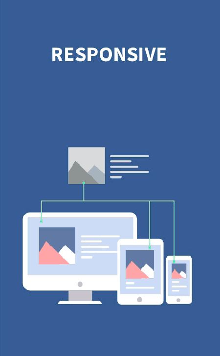
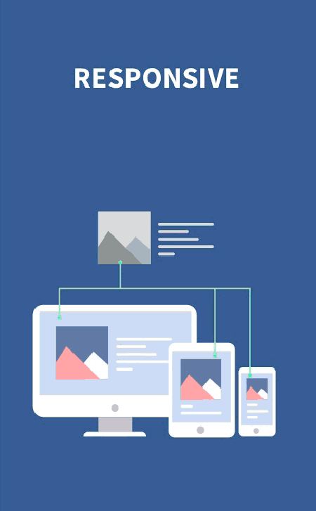

Skærmbredder er i høj grad afhængig af den udvikling der er i gang på Hardware og specielt Mobil markedet.
"Pixeltætheden" (ppi) er et udtryk for skærmens opløsning, og er ikke et udtryk for den fysiske størrlse. Mobiltelefoner har oftest lige så høj, eller højere "opløsning" end Computerskærme.
Mobiltelefoner og tablets kommer i et hav af størrelser og opløsninger, og kan vise HTML og APPs i både "Vandret" og "Lodret".
Du bruger "MediaQueries" til at angive det antal pixels der svarer til den fysiske bredde.